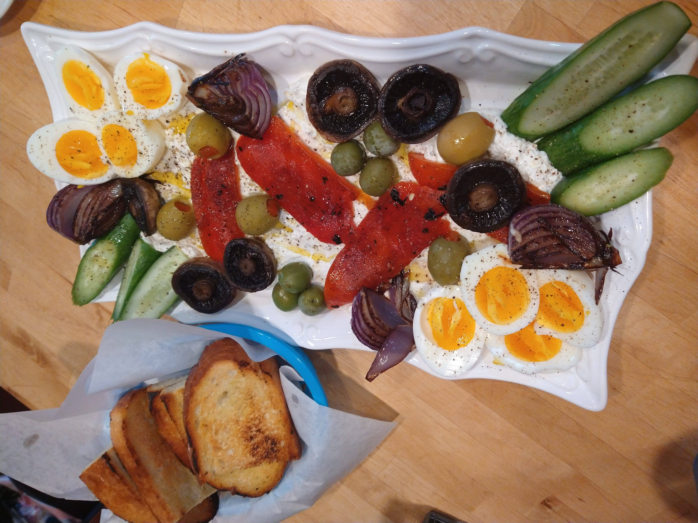

Grilled Greek Chicken Breasts with Whipped Feta

I'm showing you my favorite marinade and grilling technique for boneless, skinless chicken breasts, which can be a challenge, since they're often so dry and bland, but not with this method.
Just because I almost never grill boneless, skinless chicken breasts doesn't mean I shouldn't still want to teach those who do the best way to do it, which is why I'm posting this video for grilled Greek chicken breasts with whipped feta. That's the official reason. The real, actual reason is that I was looking for an excuse to consume large quantities of whipped feta, also known as my new favorite thing to eat.
In fact, even if you never make the chicken part of this recipe, which you should, since it's really, really good, but even if you don't, please promise me you'll make a nice big batch of whipped feta to serve on, or with… everything. And I mean that literally. This simple spread/dip/condiment would be fantastic with anything off of the grill this summer, since cool and tangy always pairs perfectly with hot and smoky.
Ingredients
- 4 (8 ounce) boneless, skinless chicken breasts
- ¼ cup red wine vinegar
- 2 teaspoons kosher salt
- 1 teaspoon freshly ground black pepper
- ¼ teaspoon cayenne pepper
Steps
- Cut chicken breasts in half lengthwise.
-
Combine red wine vinegar, kosher salt, black pepper, cayenne, thyme, oregano, rosemary, and garlic powder in a bowl. Add chicken and toss until thoroughly and evenly coated. Pour in ¼ cup olive oil and toss to coat. Cover with plastic wrap and marinate in the refrigerator for 1 to 12 hours, but 2 to 3 hours is ideal.
- Place Greek yogurt in another bowl and crumble in feta cheese. Add garlic, mint, and lemon zest and whip with an electric hand mixer or whisk until light and fluffy. Taste and adjust as needed. Refrigerate until needed.
- Preheat a charcoal grill until coals are white and very hot.